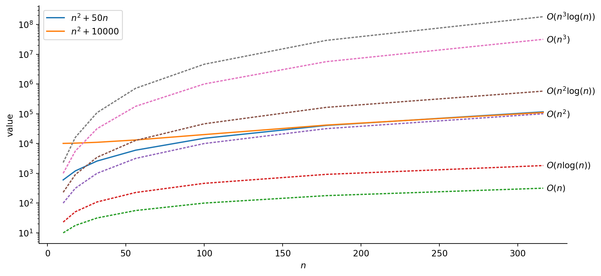

Code
import pandas as pd
import numpy as np
import matplotlib.pyplot as plt
import seaborn as sns
n_vals = [np.power(10, k) for k in np.arange(1, 2.75, 0.25)]
runtime_df = pd.DataFrame({'$n$': n_vals})
runtime_df['$n^2 + 50n$'] = runtime_df['$n$'].apply(lambda x: np.power(x, 2) + 50*x)
runtime_df['$n^2 + 10000$'] = runtime_df['$n$'].apply(lambda x: np.power(x, 2) + 10000)
runtime_df['$O(n)$'] = runtime_df['$n$'].copy()
runtime_df['$O(nlogn)$'] = runtime_df['$n$'].apply(lambda x: x * np.log(x))
runtime_df['$O(n^2)$'] = runtime_df['$n$'].apply(lambda x: np.power(x, 2))
runtime_df['$O(n^2logn)$'] = runtime_df['$n$'].apply(lambda x: np.power(x,2) * np.log(x))
runtime_df['$O(n^3)$'] = runtime_df['$n$'].apply(lambda x: np.power(x, 3))
runtime_df['$O(n^3logn)$'] = runtime_df['$n$'].apply(lambda x: np.power(x, 3) * np.log(x))
# Get the max values, for labeling the ends of lines
max_vals = runtime_df.max().to_dict()
plot_df = runtime_df.melt(id_vars=['$n$'])
#print(plot_df)
style_map = {col: '' if (col == '$n^2 + 50n$') or (col == '$n^2 + 10000$') else (2,1) for col in runtime_df.columns}
fig, ax = plt.subplots(figsize=(11,5))
sns.lineplot(plot_df, x='$n$', y='value', hue='variable', style='variable', dashes=style_map)
#plt.xscale('log')
plt.yscale('log')
# extract the existing handles and labels
h, l = ax.get_legend_handles_labels()
# slice the appropriate section of l and h to include in the legend
ax.legend(h[0:2], l[0:2])
for label, val in max_vals.items():
if (label == '$n$') or (label == '$n^2 + 50n$') or (label == '$n^2 + 10000$'):
continue
if 'logn' in label:
label = label.replace('logn', r'\log(n)')
ax.text(x = max_vals['$n$'] + 2, y = val, s=label, va='center')
# Hide the right and top spines
ax.spines[['right', 'top']].set_visible(False)
plt.show()